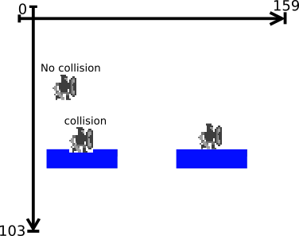

Konsole B:

Das Spielfeld ist ein zweidimensionales kartesisches Koordinatensystem mit 16 Bit Integern als x- und y-Werten.
Die y-Achse des Spielfelds ist am Ursprung gespiegelt, womit die positive Richtung nach unten zeigt.
Innerhalb dieses Spielfelds gibt es den gezeichneten Bildausschnitt. Der Bildausschnitt spannt sich auf in
x-Richtung von null bis 159 und in y-Richtung von null bis 103.
Das Spiel selbst besitzt als Attribute einen eindimensionalen Vektor für die Bewegung des Spielers in
x-Richtung, eine Schwerkraft und einen Spielzustand.
Außerdem besitzt das Spiel noch Ganzzahlwerte für die maximale Plattengröße, den Punktestand und die Anzahl der
Leben des
Spielers.
"Spiel":{
"gameSpeed": "int",
"gravity": "int",
"platWidth": "int",
"score": "int",
"lives": "int",
"gameState": "enum",
"player": "Player",
"platforms[3]": "Platform[]",
"powerUps[2]": "PowerUp[]"
}
Der Zustandsautomat für den Spielzustand besteht aus vier Zuständen. Die Zustände bestimmen über die aktuelle
Tastenbelegung und die Reaktion der Spiellogik auf die Tasten.
-
"menu": Der Startzustand, von hieraus ist es möglich Einstellungen zu verändern und ein neues Spiel zu
starten.
- "run": Im "run"-Zustand läuft das Spielgeschehen ab.
-
"stop": Hält das Spiel an und macht es dem Spieler möglich das Spiel zu beenden und ins Hauptmenü zu
wechseln.
-
"set": Der "set"-Zustand wird aktiv, sobald der Spieler stirbt. Ist dies der
Fall, so wird entweder eine neue Runde gestartet oder man kehrt ins Hauptmenü zurück,
sollten alle Leben verloren sein.
Alle interagierbaren Spielobjekte sind Rechtecke mit besonderen Eigenschaften.
Somit sind die ersten vier Eigenschaften, x, y, Höhe und Breite des Spielers, trivial.
Zusätzlich merken wir uns, um die Spielfigur beim Zeichnen löschen zu können, seine vorherige y-Position.
Diese wird später bei der Kollisionsabfrage zusätzlich hilfreich.
Weitere Eigenschaften des Spielers sind seine Sprunghöhe und seine Dashweite.
Um seine Bewegung in y-Richtung zu berechnen besitzt er zudem noch einen eindimensionalen Vektor.
Die Form des Spielers sorgt dafür das er für seinen derzeitigen Charakter die richtige Sprunganzahl und Dashweite
bzw. Dashanzahl besitzt.
Die Form sorgt auch dafür, dass der Spieler richtig gezeichnet wird.
Es gibt folgende Formen:
- Normal: Kann einen Doppelsprung und zwei mal dashen.
- Ritter: Kann zusätzlich sehr lange dashen.
- Zauberer: Kann drei mal dashen.
- Waldläufer: Kann einen Dreifachsprung.
Um festzustellen, welche physikalischen Kräfte derzeit auf den Spieler wirken gibt es den Spielerzustand, der als
Zustandsautomat implementiert ist.

"Spieler":{
"x": "int",
"y": "int",
"height": "int",
"width": "int",
"lastY": "int",
"jumpHeight": "int",
"dashDist": "int",
"playerMovY": "int",
"playerForm": "enum"
"playerState": "enum"
}
Der Spielerzustandsautomat besteht aus vier Zuständen:
- "falling": Der Startzustand, hier wird die Kollision mit allen anderen Spielobjekten abgefragt
(collision_P_*). Zudem wirkt hier der y-Bewegungsvektor auf den Spieler.
- "standing": Es wird die Kollision mit der Plattform unter dem Spieler abgefragt (collision_G).
- "dashing": Der Spieler ist schwerelos, die y-Position wird folglich beibehalten, und die Geschwindigkeit der
Bewegung in
x-Richtung wird erhöht.
- "jumping": Äquivalent zum "falling"-Zustand mit negativer y-Geschwindigkeit.
Um Platz im Programmspeicher des Mikrocontrollers zu sparen sind sowohl das Spiel als auch der Spieler keine eigenen
Klassen im Code, sondern
ihre Attribute sind als globale Variablen deklariert.
Die Plattformen sind einfache Rechtecke die eine feste Höhe besitzen. Das einzig besondere ist, dass die Länge der
Plattformen immer durch 15 teilbar sein muss. Das liegt an der Größe des Sprites, für die Plattformen, der genau 15
Pixel lang ist.
"Plaform":{
"x": "int",
"y": "int",
"height": "int",
"width": "int",
}
Die Powerups sind Quadrate mit einer festen Seitenlänge. Sie besitzen zusätzlich noch einen Typen der festlegt,
welchen Effekt sie haben. Es gibt die Powerup-Typen:
-
keiner: nichts passiert.
-
Tod: Der Spieler stirbt.
-
Ritter: Der Spieler wird zum Ritter
- Zauberer: Der Spieler wird zum Zauberer
-
Waldläufer: Der Spieler wird zum Waldläufer
-
Leben: Ein Leben dazu.
-
langsamer: Das Spiel wird langsamer.
-
schneller: Das Spiel wird schneller.
-
Extrapunkte
-
Punktabzug

"PowerUp":{
"x": "int",
"y": "int",
"height": "int",
"type": "enum",
}
Ein Sidescroller ist ein Spiel in einer 2D-Ansicht, bei der man sich nur nach rechts oder nach links bewegen kann.
"Dragonquest" gehört zur Unterart der Endloslauf-Spiele. Das heißt, der Spieler bewegt sich kontinuierlich in eine
Richtung, in diesem Fall nach rechts.
Zur Implementation eines Sidescrollers ist es wichtig sich darüber klar zu sein, wie Bewegungen dargestellt werden.
Betrachtet man nur die Konstellation der beiden Rechtecke so ist es,
für die Darstellung einer Bewegung in
x-Richtung, egal ob die x-Koordinate des blauen Quadrats erhöht oder die des grünen verringert wird.
In der Spiellogik wird die Position des Spielers erhöht. Beim Zeichnen der Objekte wird der Spieler an einer festen
Position des LCD Displays gezeichnet.
Die anderen Spielobjekte werden hingegen so verschoben, dass die Konstellation der Spielobjekte wieder stimmt.
Dies wird mittels einer Offset-Variable implementiert. Diese Variable wird beim Zeichen von der x-Position der
Spielobjekte abgezogen.

Bei der derzeitigen Implementierung ergibt sich das Problem, dass die x-Position, ein 16 Bit Integer, des
Spielers überläuft.
Um den Überlauf zu verhindern, wird mittels einer Funktion nach jedem Frame überprüft, ob ein gewisser Threshold
erreicht ist. Dieser Threshold muss logischerweise kleiner als das Maximum eines
16 Bit Integers sein. Ist der Threshold erreicht, so wird die Position des Spielers auf null zurückgesetzt. Um die
Konstellation der Spielobjekte zu erhalten, wird
der Wert der x-Position des Spielers von den x-Werten der anderen Spielobjekte abgezogen. Zudem wird der x-Offset
zurückgesetzt.
In "DragonQuest" wird diese Funktion zusätzlich dazu genutzt, um die Schwierigkeit des Spiels zu erhöhen. Die
Spielgeschwindigkeit wird erhöht und die Plattengröße verringert.
Die drei Anfangsplattformen sind "hardcoded".
Sobald eine Plattform aus dem Bild läuft, wird sie mit einer Neuen ersetzt.
Um die x-Position der neuen Plattform festzulegen, wird ein Zufallswert zwischen der minimalen und maximalen
Sprungweite generiert.
Die minimale Sprungweite ergibt sich aus der Sprunghöhe und der Spielgeschwindigkeit:
minimale
Sprungweite = (Sprunghöhe * 2
+ 1) * Spielgeschwindigkeit.
Die maximale Sprungweite ergibt sich aus der minimalen Sprungweite:
maximale Sprungweite = minimale
Sprungweite * 2.
Die neue y-Position der Plattform wird zufällig festgelegt.
Dabei wird ein Zufallswert zwischen 16 und 96 gewählt,
16 damit auf der höchsten Plattform noch genug Platz für den Spieler ist und 96 damit genug Platz unterhalb der
untersten Plattform ist ohne die Punkteanzeige zu schneiden.
Für die Länge der neuen Plattform wird ein Zufallswert zwischen 30 und der maximalen Plattengröße gewählt.

Auf jeder neuen Plattform entsteht ein Powerup mit der Wahrscheinlichkeit 15%.
Die Position auf der Plattform wird zufällig gewählt.
Der Typ des Powerups wird mittels gewichtetem Zufall festgelegt.
Die einfachste Kollisionsabfrage ist die zweier Rechtecke.
Hierbei wird überprüft, ob die Summe der x-Position einer Plattform mit der zugehörigen Breite ober- oder unterhalb
der x-Position der zweiten Plattform liegt.
Im Falle einer Überschreitung kollidieren die Rechtecke. Die gleiche Technik wird auch in y-Richtung verwendet.
if (rect1.x < rect2.x + rect2.width &&
rect1.x + rect1.width > rect2.x &&
rect1.y < rect2.y + rect2.height &&
rect1.y + rect1.height > rect2.y) {
// collision detected!
}
In "DragonQuest" benötigen wir zusätzlich die Richtung der Kollision.
Ist die Unterkante des Spielers im vorherigen Frame über der Plattform, so ist es eine Kollision von oben.
Ist die Oberkante des Spielers im vorherigen Frame unter der Plattform, so ist es eine Kollision von unten.
Ist beides nicht der Fall so ist es eine Kollision von der Seite.
Da sich der Spieler nur nach rechts bewegt, ist es nicht nötig zu testen, ob die Kollision von links oder rechts
erfolgt ist.
Die Spiellogik von "DragonQuest" verfügt über dreierlei Kollisionsabfragen: Zwei des Spielers mit den Platformen und
eine des Spielers mit den Powerups.
Die erste Kollsionsabfrage überprüft die Kollison mit der Plattform unter dem Spieler mit dem Spieler.
Hierbei wird abgefragt, ob die Reihe Pixel unter dem Spieler mit einer Plattform kollidiert, wie in der folgenden
Abbildung in grün dargestellt.
Ist dies nicht der Fall, so geht der Spieler in den "falling"-Zustand über.
Die zweite Kollisionsabfrage ist die Kollision mit den Plattformen, wobei die Richtung der Kollision verwendet wird.
Erfolgt die Kollision von oben, so wird der Spieler auf die Plattform positioniert und in den "standing"-Zustand
versetzt.
Erfolgt die Kollision von unten, so stößt der Spieler an. Sein y-Bewegungsvektor wird auf null gesetzt.
Ist die Kollision von der Seite, so stirbt der Spieler und der "set"-Zustand des Spiels wird aufgerufen.

Bei der Kollision mit Powerups wird abgefragt, ob der Spieler mit einem Powerup kollidiert. Sobald eine Kollision
auftritt, wird der Typ des Powerups auf "none" gesetzt. Um das mehrfache Auftreten des
Powerup-Effektes zu verhindern.
Die Spezifikation unseres Spiels sieht vor, dass der Spieler Doppelsprünge oder sogar Dreifachsprünge ausführen
kann.
Die maximale Anzahl der Sprünge wird mittels eines Sprungzählers implementiert.
Ist der Sprungzähler größer null und wird der Taster für das Springen betätigt, so wird zum y-Bewegungsvektor des
Spielers die Sprunggeschwindigkeit addiert. Gleichzeitig wird der Sprungzähler um eins reduziert.
Befindet sich der Spieler im "standing"-Zustand so wird der Sprungzähler wieder auf seinen Anfangswert
zurückgesetzt.
Für die Implementation des "Dashes" werden zwei Zähler benötigt. Einer der wie der Sprungzähler agiert und ein
Zähler der zählt, wie viele Frames der Spieler bereits "gedashed" ist.
Die "dash"-Funktion ist weitestgehend äquivalent zur "jump"-Funktion.
Der Unterschied liegt im Spielerzustand.
Im "dashing"-Zustand wird abgefragt ob der Zähler für die "gedashten" Frames bereits null ist, wenn ja so geht der
Spieler über in den "falling"-Zustand.
Wenn nein, so wird der Zähler für die Frames um eins reduziert.
Zusätzlich wird die Spielgeschwindigkeit verdoppelt.
Beim Testen fällt auf, dass die Aktionen "Sprung"->"Dash" zur Folge hat, dass sich der Spieler nach dem "Dash"
weiterhin
nach oben bewegt.
Bei der Aktion "Dash"->"Sprung" setzt der Spieler seinen "Dash" nach dem Sprung fort.
Dieses Verhalten ist nicht gewünscht, ist aber leicht zu beheben indem der Zähler in der "sprung"-Funktion für die
"gedashten" Frames auf null gesetzt und in der "dash"-Funktion der y-Bewegungsvektor des Spielers ebenfalls auf
null gesetzt wird.